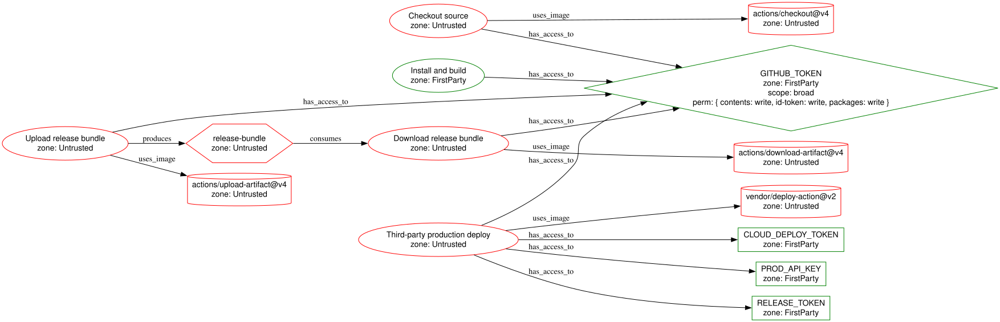
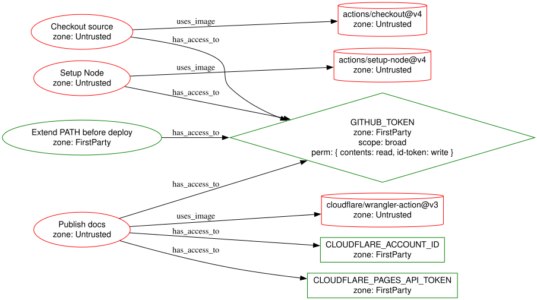
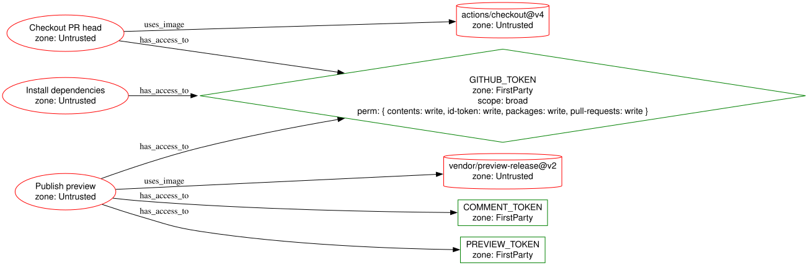

Mutable third-party deploy
Broad token scope, production secrets, artifact handoff, and a mutable external deploy action in the same path.
Production authority delegated to mutable external code.
Most pipelines pass review. That is not where the risk is.
Reviewed != executed. taudit shows how authority actually moves through CI/CD before it becomes runtime risk.
Most tools scan files. taudit models how authority moves through GitHub Actions, Azure DevOps, and GitLab CI as one inspectable graph.
The visuals are generated from real workflow shapes and rendered as inspectable authority graphs.
Broad token scope, production secrets, artifact handoff, and a mutable external deploy action in the same path.
Production authority delegated to mutable external code.
A PATH mutation lands before a credential-bearing deploy action resolves helpers, so mutable runner state joins the deploy path.
Mutable runner state joins a credential-bearing helper boundary.
pull_request_target checks out PR code, runs package install, and keeps write, package, and OIDC authority in scope.
Trusted metadata, untrusted code, and writeback authority in one path.
Operator-friendly findings for each workflow.
Inspectable DOT plus rendered SVG for docs and slides.
Machine-readable rollup for boundary path counts and top sinks.
A mutable deploy action gets a broad GitHub token, production secrets, artifact access, and deploy context in one place.

The question is not whether PATH is mutable. GitHub Actions makes it mutable by design. The question is what authority arrives after that mutation and which helper resolution path becomes part of the blast radius.
A local run step extends GITHUB_PATH before deploy authority is materialized.
cloudflare/wrangler-action@v3 receives Cloudflare deploy authority after mutable runner state is already in play.

pull_request_target is dangerous because privileged base-repo context and PR-controlled code still meet. The path here is simple: checkout PR head, install dependencies, then publish with writeback authority live.

Findings grouped by severity and evidence path for shells and CI logs.
Inspectable graph source plus rendered Graphviz output ready for docs, talks, and reports.
Boundary path count, top sinks, and top sources without forcing a screenshot-heavy workflow.
Mutable executable + trust-boundary crossing + inherited authority = review now.
Start with one real workflow, map the authority path, and make the rotation set obvious before incident response begins.
No signup. No platform account. One workflow file is enough.
Show what it can reach, what evidence exists, and what has to rotate if it goes bad.
One workflow file is enough to produce an inspectable authority path with evidence, reachable sinks, and rotation scope.